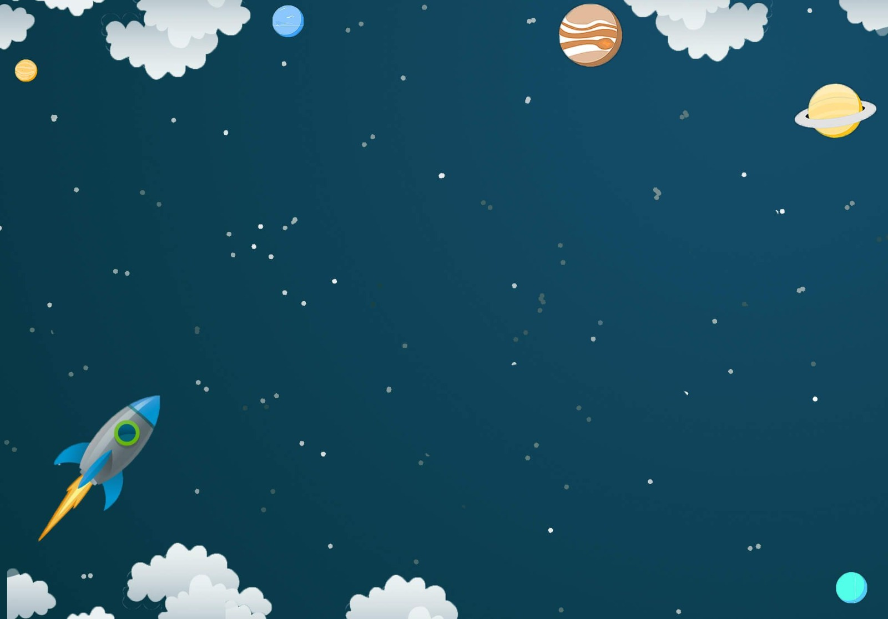

<!-- Fullscreen Background -->


<div class="about-container">
  <i class="bi bi-house-door home-icon"></i>
  <div class="content">
    <h1
      class="align-item-center p-3 m-5 underline fw-semibold text-decoration-underline"
    >
      Teacher Resource
    </h1>
    <p class="fw-semibold">
      Space weather refers to the conditions in space that affect Earth and our
      technology. It's all about understanding how energy and particles from the
      Sun interact with Earth. Space weather can impact things like satellites,
      power grids, and even astronauts in space. For example, when the Sun
      releases a burst of energy called a solar flare, it can cause magnetic
      storms on Earth. These storms can affect our satellites and communications
      systems. Learning about space weather helps us protect our technology and
      understand the environment beyond our planet.
    </p>
  </div>
</div>
